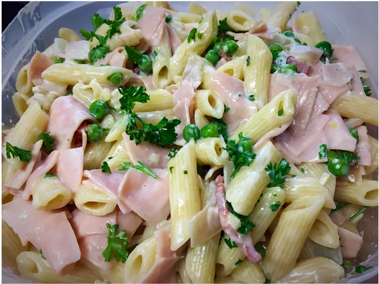

Creamy Pasta

These are the ingredients you'll need to make this top-rated homemade lasagna recipe:
Ingredients:
- 3 cups rigatoni pasta
- 6 slices bacon, diced
- 2 cloves garlic, minced
- 1 ¼ cups milk
- 1 (8 ounce) package cream cheese, cut into cubes
- ½ cup butter, softened
- ½ cup freshly shredded Parmesan cheese
- ¼ cup fresh green peas
- ¼ cup diced cooked ham
Steps:
- Bring a large pot of lightly salted water to a boil. Cook rigatoni in the boiling water, stirring occasionally until cooked through but firm to the bite, about 13 minutes. Drain.
- Meanwhile, place bacon in a large skillet and cook over medium-high heat, turning occasionally, until evenly browned, about 10 minutes. Remove bacon with a slotted spoon, leaving drippings in pan; set bacon aside.
- Cook and stir garlic in the remaining bacon grease over medium heat. Add milk, cream cheese, and butter to skillet; stir until smooth. Stir Parmesan cheese, peas, ham, and bacon into cream cheese mixture; cook until peas are heated through, about 5 minutes more. Mix pasta into sauce to serve.
Home
Lasagna
Chicken Salad